Introduction
This guide explains the process of installing and using ReMind. After reading this, you will understand how to install and run the app, how to grant notification permissions, how to create and manage Reminder and Collections, how to add and remove Reminders from Collections, how to delete Reminder and Collections, how to search Reminders and Applications, and how to generate and export reports.
Installation and Using the Application
Installing ReMind
ReMind is distributed as an APK file from the project's website, as opposed to the App Store. To install the app:
- On your Android 8 or newer phone, open your browser app and navigate to the project website: https://re-mindapp.github.io/remind.
- Tap the “Download ReMind” button. If prompted to download by the browser, accept. If prompted to grant your browser storage permission, accept.
- Open the downloaded ReMind-v1.0.apk file from the Browser's downloads or your Files app.
- If your device shows an “Install Unknown Apps” prompt, tap “Settings” and select “Allow from this Source.” This will often happen when installing an app from outside of the Play Store.
- Tap Install, then open ReMind. You will be brought to the Reminder List screen.
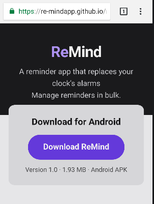
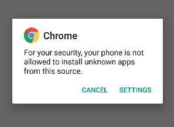
Granting Notification Permissions
When you first install the app, ReMind will need Notification permissions. A banner at the top of the screen will indicate that permissions are required. It has two buttons: Allow and Settings. Settings will bring you to the notification settings for the app, allowing you to manually specify which notification settings you wish to grant ReMind. This screen is managed by your Android OS.
The Allow button causes a pop-up to appear, requesting permissions, with the options “Deny” and “Allow all the time.” Deny will dismiss the pop-up with no changes to the permission state. Allow all the time will set a default set of Notification settings, allowing ReMind to display reminder notifications.
Reminders
On first launch, you'll be brought to the screen seen on the right. There are three buttons on the right of the screen, each with an icon: A magnifying glass, a sort icon, and a larger button with a + icon. A labelled bottom bar exists to ease navigation. The main body of this screen displays a list of Reminders, or a notice that no Reminders are present, and a hint on how to create a Reminder.
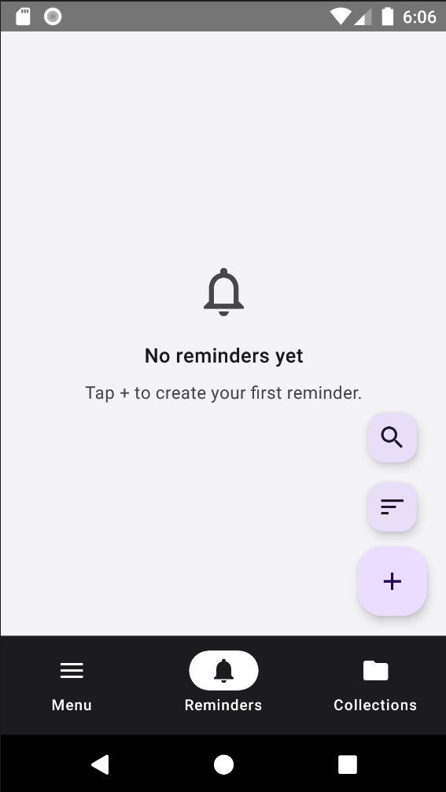
Create a New Reminder
- From the Reminders list page, press the “+” button to be navigated to the New Reminder screen.
- Input detail about your reminder: a. Input a title in the Title field (required). b. Select a Repetition rule (required, defaults to None). i. If your repeating rule is set to None or Monthly, you may select a date via the date picker. ii. If your repeating rule is set to Weekly, you may select a day of the week, or the weekdays or weekends buttons, above the notes field. c. Select a time for the Reminder. d. Write a note for additional detail about your alarm (optional). e. If you already have a Collection defined, underneath the notes field you may select a Collection from a list by tapping on its name.
- Tap the Save button in the top right corner to save the reminder and return to the Reminders list.
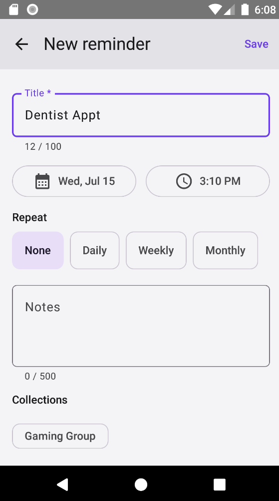
Editing a Reminder
- From the reminders list, tap on the pencil icon on the right of a Reminder in the list.
- You may edit the Title, Date, Time, Repetition rule, Notes, and Collections for the Reminder you selected.
- Tap the Save button in the top right corner to save the reminder and return to the Reminders list.
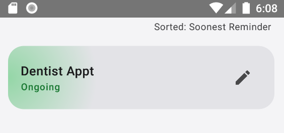
Deleting a Reminder
- From the reminders list, tap on the Reminder to expand its detail.
- Tap the Delete button to delete the Reminder.
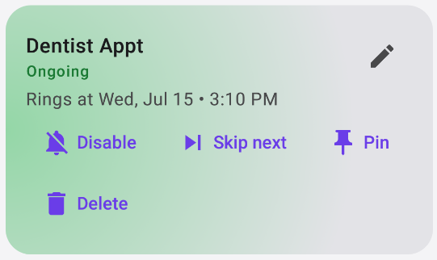
Disabling and Enabling a Reminder
Reminders are enabled upon creation. There are two ways to disable a Reminder: You may use a gesture-based approach, or tap a button on the expanded Reminder. When a Reminder is disabled, it will have a Red gradient, and red text saying “Disabled” under its title, and the Disable button will change to become an “Enable” button, and the gesture to disable the Reminder becomes a gesture to re-enable it. A snackbar will also appear with an Undo button that can re-enable the Reminder.
Button
- From the reminders list, tap on the Reminder to expand its detail.
- Tap the Delete button to delete the Reminder.
Gesture
- From the reminders list, swipe left on a Reminder.
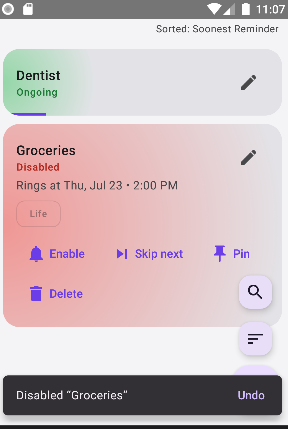
Sorting Reminders
You may sort Reminders, to display the list in a specific order. If there are reminders in your list, at the top right of the screen, you can see what the current sorting style is set to. There are three sorting styles for Reminders: Alphabetical, Soonest Reminder, and By Status. To change your sorting style:
- Tap on the second floating action button in the bottom right of the screen, with the three lines of different widths.
- Select a different sorting style than the one currently selected.
Pinning a Reminder
You may pin a Reminder to the top, regardless of your chosen Sorting rule.
- From the reminders list, tap on the Reminder to expand its detail.
- Tap the Pin button to pin the Reminder.
Skipping a Reminder
If you have a recurring Reminder, you may choose to skip the next occurrence of it.
- From the reminders list, tap on the Reminder to expand its detail.
- Tap the Skip Next button to pin the Reminder.
You may also use a gesture for this:
- From the reminders list, swipe Right on a Reminder.
Searching for Reminders
If you have several reminders, you may wish to search for a specific one. There are two ways to do this: A Gesture and a Floating Action Button.
Gesture
- On the Reminder list, pull down on the screen. The search bar will appear to drop in from the top of the screen.
Floating Action Button
- On the Reminder list, tap the top-most Floating Action button, with a magnifying lens icon. The search bar will appear to drop in from the top of the screen.
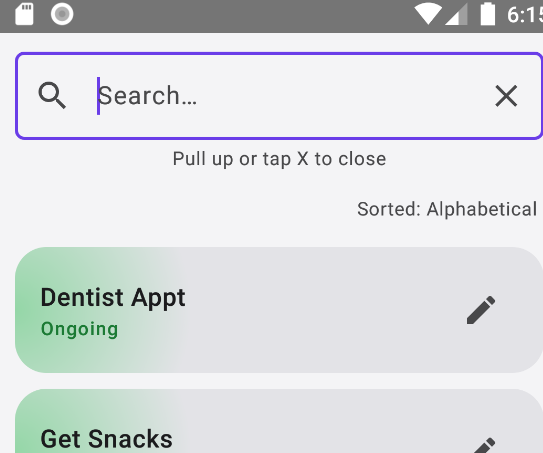
Performing a Search
- Input text into the search bar matching detail in a Reminder's title or its notes section. a. Reminders that don't match the search input will disappear from the list, leaving only Reminders that match. b. If no matches are found, no Reminders will display, and the page will have a notice indicating there are no matches for the search term.
Closing the Search Bar
You may close the search bar in one of two ways:
- Tap the X button on the right end of the search input field.
- Swipe up from the screen.
Whichever way you close the search bar, it will slide upward until it is off-screen.
Collections
Collections are groups that Reminders can be a part of. They allow an easy way to look through related Reminders, and have a Bulk disable/enable feature. Creating, Editing, Deleting, Searching, and Sorting all work pretty much the same as they do with Reminders. The UI for this screen is nearly identical, however, Collections in the Collection List will have a number next to their Edit button, indicating how many Reminders are included in the Collection.
Creating a Collection
- From the Collections list page, press the “+” button to be navigated to the New Collection screen.
- Input a name for your reminder
- Optionally, if you have any reminders already, you may click the “+ Add reminder” button under the name field to add reminders to the collection (this will be covered under “Adding a Reminder to a Collection”).
- Click the Save button to save the Collection and return to the Collection List
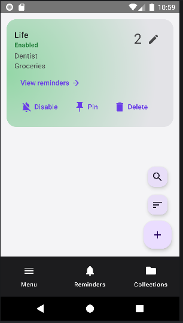
Editing a Collection
As with Reminders, click on the pencil icon on the right side of a Collection in the list. You may edit the title field, as well as add or remove Reminders. Tap the Save button to save the Collection and return to the Collection List
Adding a Reminder to a Collection
While in the edit screen, you may use a “+ Add reminder” button to add a reminder directly to the Collection.
Managing reminders in a Collection
While in the edit or create screen, under the Name input is a “Reminders” header and a “+ Add reminder” button. If you click the Add button, a drawer will pop up from the bottom, with a list of Reminder names, preceded by a + icon. If there are no reminders, or if all possible reminders are already associated with the Collection, the drawer will instead have a notice “Every reminder is already in this collection. You may tap outside of the drawer menu to dismiss it.
If any Reminders are attached to a Collection, they will appear in a list under both the button and the header., with a toggle button, an edit button, and an X button. The Toggle button represents enabled/disabled for the Reminder. If you disable it, the reminder will be disabled. If you tap the edit button, you will be taken to the “Edit reminder” page for that reminder. If you tap the X button, the reminder will no longer be associated with the Collection.
Managing reminders through the Collection Edit screen does not require saving the collection to take effect.
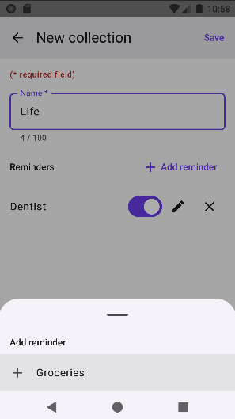
Deleting a Collection
- From the Collection list, tap on a Collection to expand it.
- Tap the Delete button
- On the Delete Collection? Modal that appears, you may take one of three options: a. Tap “Delete reminders too” to delete all reminders that are a part of that Collection when deleting the Collection. b. Tab “Cancel” to abort the delete process. c. Tap “Keep Reminders” to automatically unlink the reminders from the Collection, when deleting the Collection.
Viewing the Reminders within a Collection
- From the Collection List, tap on a Collection to expand it.
- Tap on the “View Reminders” link.
- You will be brought to a Reminders list with no bottom bar, and a top bar with a back button and the title of the collection. Only reminders associated with the Collection will display. All actions you can perform within the regular Reminder list, as detailed above, work in this UI, but results are limited only to the reminders associated with the Collection.
Enabling/Disabling Collections
Enabling/Disabling a Collection works identically to how it does for Reminders, with an added piece of functionality. When you disable a Collection, all reminders associated with that Collection are disabled as well.
Searching Collections
Searching Collections works identically to how it does for Reminders, except that it only matches for the Name field of a Collection, as there is no notes field.
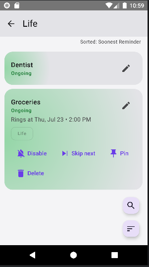
Sorting Collections
Sorting Collections works identically to how it does for Reminders, except that the sorting options are Alphabetical, # of Reminders, and by Status. The Collections List does not have a caption indicating which sort setting is being used.
Reports
Entering the Reporting UI
- To access the reporting feature, from the application, navigate to the Reminders or Collections lists, and tap the Menu button in the bottom left.
- In the drawer that opens from the bottom, tap “Reports”.
- You can now view a report detailing data for the current month's Reminders and Collections, including how many events fired for a Reminder, how many times was the reminder snoozed, how many times were they completed or turned off, their current state, which collections they're a part of, and when their last event was; For Collections, how many member Reminders there are, how many are enabled, and how many events fired for reminders within the collection.
- You may also tap the chevron icons to the left and right of the current month to navigate to reports for other months. You may not navigate further forward than the current month, and months prior to the installation of the app will have no data.
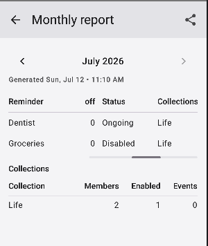
Exporting Reports
- While in the Reports UI, on a Report from a month with reminder activity, tap the share icon in the top right of the screen.
- Your Android OS' share menu will appear, allowing you to share it to an app of your choice, such as Google Drive.